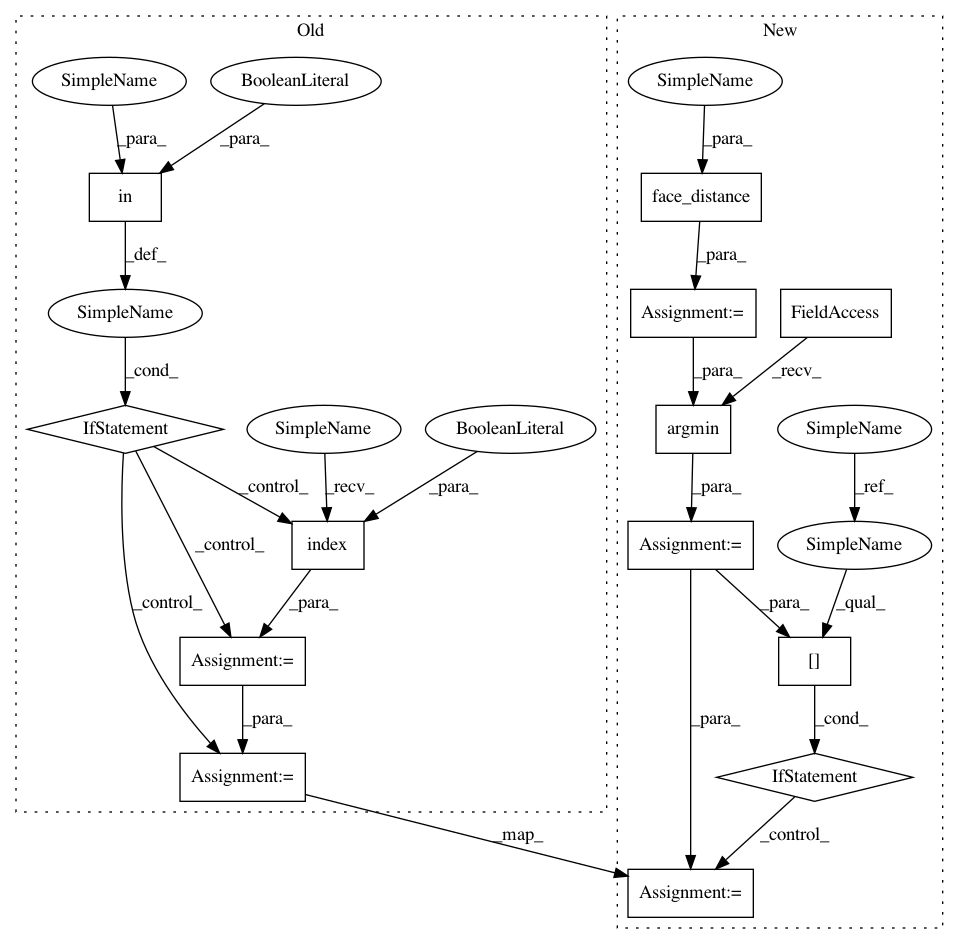

23d2d656652274809edbaf89979ab66ba168f12c,examples/facerec_from_webcam_faster.py,,,#,14
Before Change
name = "Unknown"
// If a match was found in known_face_encodings, just use the first one.
if True in matches:
first_match_index = matches.index(True)
name = known_face_names[first_match_index]
face_names.append(name)
process_this_frame = not process_this_frame
After Change
face_names = []
for face_encoding in face_encodings:
// See if the face is a match for the known face(s)
matches = face_recognition.compare_faces(known_face_encodings, face_encoding)
name = "Unknown"
// // If a match was found in known_face_encodings, just use the first one.
// if True in matches:
// first_match_index = matches.index(True)
// name = known_face_names[first_match_index]
// Or instead, use the known face with the smallest distance to the new face
face_distances = face_recognition.face_distance(known_face_encodings, face_encoding)
best_match_index = np.argmin(face_distances)
if matches[best_match_index]:
name = known_face_names[best_match_index]
face_names.append(name)
process_this_frame = not process_this_frame
In pattern: SUPERPATTERN
Frequency: 3
Non-data size: 13
Instances
Project Name: ageitgey/face_recognition
Commit Name: 23d2d656652274809edbaf89979ab66ba168f12c
Time: 2019-04-15
Author: peiqial@outlook.com
File Name: examples/facerec_from_webcam_faster.py
Class Name:
Method Name:
Project Name: ageitgey/face_recognition
Commit Name: 23d2d656652274809edbaf89979ab66ba168f12c
Time: 2019-04-15
Author: peiqial@outlook.com
File Name: examples/identify_and_draw_boxes_on_faces.py
Class Name:
Method Name:
Project Name: ageitgey/face_recognition
Commit Name: 23d2d656652274809edbaf89979ab66ba168f12c
Time: 2019-04-15
Author: peiqial@outlook.com
File Name: examples/facerec_from_webcam.py
Class Name:
Method Name: